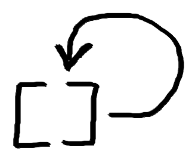
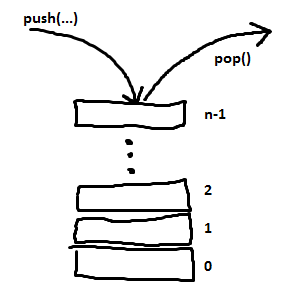

JavaScript AJAX, Promise'y
Plan zajęć
- Wprowadzenie
- Działanie JS-a
- HTTP, AJAX
fetchPromiseasync/await
push & pop
const values = [1];values.push(2); values.push(3);alert(values); // 1,2,3alert(values.pop()); // 3 alert(values); // 1,2
- "Upychanie" elementu na końcu tablicy
- Zdejmowanie ostatniego elementu
Wizualizacja



Stos, LIFO
- Last in, first out
-
Limited access data structure
- Tablica = random access
- Komunikacja tylko "z jednej strony"
-
push&popwręcz zarezerwowane dla stosu
-
Czo ten stos?
- call stack
- stack trace
Plan zajęć
- Wprowadzenie
- Działanie JS-a
- HTTP, AJAX
fetchPromiseasync/await
push & pop
testStack();function testStack() { const result = runHeavyLogic(); alert(result); }function runHeavyLogic() { const num = getRandomNumber(); return num + 2; }function getRandomNumber() { const from1to10 = parseInt(Math.random() * 10) + 1; return from1to10; }
push & pop
testStack(); function testStack() { const result = runHeavyLogic();setTimeout(interruptWithAlert, 1000);alert(result); } function runHeavyLogic() { // simplified return 2 + 2; } function interruptWithAlert() { alert('test'); }
Callback?
Don't call us, we'll call you
Ćwiczenie 1
- Napisać funkcję, losującą liczby
- x:
[0, window.innerWidth-100) - y:
[0, window.innerHeight-100) - Użyć
parseIntorazMath.random()
- x:
- W funkcji stworzyć diva:
const d = document.createElement('div') - Przypisać styl:
d.style.cssText = (` position: absolute; left: ${x}px; top: ${y}px; width: 100px; height: 100px; background: yellow `); - Callback na kliknięcie w diva, użyć
d.remove() - "Podłączyć":
document.body.appendChild(d); - Użyć napisanej funkcji wewnątrz
setInterval, wołać co 2 sekundy - W których miejscach działa Event Loop?
Plan zajęć
- Wprowadzenie
- Działanie JS-a
- HTTP, AJAX
fetchPromiseasync/await
HTTP
- Gdy wpisujemy adres, np. "google.pl", przeglądarka dodaje od siebie "http://"
- W internetach HTTP jest wszechobecne!
- Najpopularniejszą metodą protokołu HTTP jest GET; są jeszcze inne (np. PUT, POST, DELETE)
- Przeglądarka wysyła żądanie (request) HTTP GET pod adres, np. google.pl
- W odpowiedzi (response) dostajemy jakiegoś tam HTML-a, JS-a itd. - naszą stronę
- Możemy też dostać: obrazek, JSON-a, XML-a, ...
Request
- Pod konkretny adres, konkretną metodą
- Z parametrami, np.
q=mistrzw https://www.google.pl/search?q=mistrz
- Z parametrami, np.
- Nagłówki (headery) żądania:
- Accept
- Content-Type
- Ciało żądania (request body):
- Formularz (pary klucz-wartość)
- JSON
Response
- Status
- 404 Not Found
- 200 OK
- 500 Internal Server Error
- Nagłówki (tak samo jak z requestem)
- Ciało
- Dostosowane do "Accept" z requestu
AJAX
- Asynchronous JavaScript and XML
XMLHttpRequest- Wysyłanie żądań HTTP "za plecami"
- Przyjście odpowiedzi = odpalenie naszego callbacka
- Pierwsza wersja = trochę bieda
Przykład
const httpRequest = new XMLHttpRequest();
// callback
httpRequest.onreadystatechange = function() {
if (httpRequest.readyState === XMLHttpRequest.DONE) {
if (httpRequest.status === 200) {
console.log(httpRequest);
const catUrl = JSON.parse(httpRequest.response).file;
document.getElementById('cat-example')
.style.backgroundImage = `url(${catUrl})`;
}
}
};
// start
httpRequest.open('GET', 'https://aws.random.cat/meow');
httpRequest.send();
https://github.com/toddmotto/public-apis
Ćwiczenie 2
- Zapoznać się z https://github.com/15Dkatz/official_joke_api
- Pobrać kawał, wzorując się na przykładzie
- Przy pomocy 2
alertów wyświetlić "setup" i "punchline" kawału
CORS
- Cross-Origin Resource Sharing
- Np. mamy localhost:8080. Przeglądarka nie pozwala pytać między domenami
(blokuje)
- Nie pozwoli nawet uderzyć do localhost:8081
- Kwestie bezpieczeństwa
- Żeby odpytywać między domenami, pytany serwer musi ustawiać odpowiednie
nagłówki
- Np. z jakich domen z zewnąrz akceptuje żądania
Plan zajęć
- Wprowadzenie
- Działanie JS-a
- HTTP, AJAX
fetchPromiseasync/await
fetch
- Uproszczone odpytywanie serwisów
fetch(url)- najprostsze wysłanie GET-a- Dostępny też 2. parametr - obiekt np. z polami
method,body,headers
- Dostępny też 2. parametr - obiekt np. z polami
fetch(Request)- alternatywne użycieRequest,Response,Headers- klasy pomocnicze- Używa obietnic (Promise)
- Dokumentacja
Przykład
fetch('https://aws.random.cat/meow').then(response => {
console.log(response);
response.json().then(catObj => {
const catUrl = catObj.file;
document.getElementById('cat-fetch')
.style.backgroundImage = `url(${catUrl})`;
});
});
Ćwiczenie 3
- Przepisać poprzedni kod na
fetcha - Wykorzystać przykład i dokumentację
fetcha - Wyświetlać kawały tylko, gdy odpowiedź ma status 200
Plan zajęć
- Wprowadzenie
- Działanie JS-a
- HTTP, AJAX
fetchPromiseasync/await
Promise
- Zdarzenie, które kiedyś się spełni lub się wywali
- Przykład: zamówienie piwa w barze
- Zostajemy z obietnicą, że je dostaniemy
Promise,pending- Barman wręczył piwo -
Promise,fulfilled - Piwo się skończyło :( - dostajemy powód, przez który nie da się wypełnić obietnicy
Promise,rejected
.catch(onRejected)- callback na błąd.then(onFulfilled, onRejected)
Przykład
const firstPromise = Promise.resolve(3); console.log(firstPromise);console.log(Promise.reject('fail'));
Przykład 2
Promise.all([
Promise.resolve(3),
new Promise((resolve, reject) => {
alert('action!');
resolve(4);
}),
new Promise((resolve, reject) => {
setTimeout(resolve, 100, '555');
})
]).then(fulfilleds => alert(fulfilleds));
fetch + Promise
- Metody
Response'a też zwracająPromise'y:response.json()response.text()
- Częsta sztuczka - .then().then().then()
- "Spłaszczenie" piekła callbacków
Przykład
fetch('https://aws.random.cat/meow')
.then(response => response.json())
.then(catObj => catObj.file)
.then(catUrl => document.getElementById('cat-promise')
.style.backgroundImage = `url(${catUrl})`);
Ćwiczenie 4
- Usprawnić kod odpytujący API kawałów, korzystając z najnowszej wiedzy
- Zadbać o sprawdzenie statusu
- Dla statusów innych niż 200 rzucać wyjątek:
throw new Error('Status not 200');
- Dla statusów innych niż 200 rzucać wyjątek:
- Wykorzystać
catch
Ćwiczenie 5
-
Zasymulować wysyłanie formularza:
- Ciało zapytania:
new URLSearchParams({ geoit: 'JSON', locate: '52.21667,21.03333' }) -
'Content-Type': 'application/x-www-form-urlencoded' - Metoda POST
- Ciało zapytania:
- Wysłać pod
https://geocode.xyz, zapoznać się z odpowiedzią - Pamiętać o obsłudze błędów
Ćwiczenie 6
- Stworzyć reactowy komponent AboutMe
- Utworzyć go jako klasę
- Komponent powinien oczekiwać propsa
me, przyjmującegostringa - W metodzie
componentDidMount, pobierać dane z GitHub API: https://api.github.com/users/me, gdzie "me" to wartość propsa - Wyświetlić obrazek na podstawie pola
avatar_urlz pobranego obiektu - Obok obrazka dać treść pola
bioi ostylować
Plan zajęć
- Wprowadzenie
- Działanie JS-a
- HTTP, AJAX
fetchPromiseasync/await
async, await
console.log(getGeo());
async function getGeo() {
const response = await fetch('https://geocode.xyz', {
method: 'POST',
headers: {
'Content-Type': 'application/x-www-form-urlencoded',
},
body: new URLSearchParams({
geoit: 'JSON',
locate: '52.21667,21.03333'
})
});
if(!response.ok) {
throw new Error('Response status not 200');
}
return await response.json();
}